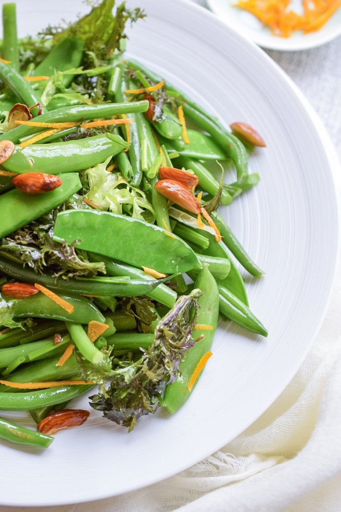
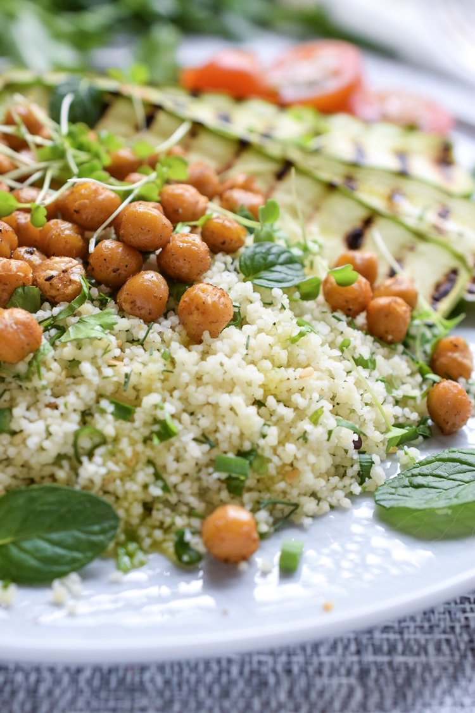
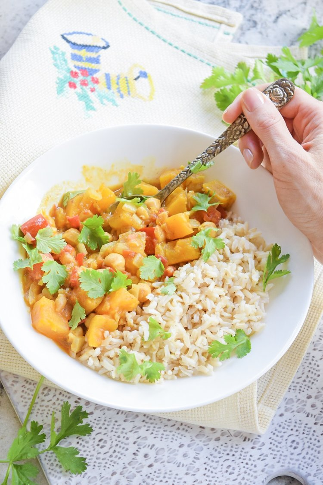

TRY OUR DELICIOUS RECIPES
In this article you will find the most famous deliciuos vegan recipes
French Beans and Mustard Greens Salad

INGREDIENTS
- 200g green beans
- 200g sugar snap peas
- 100g mustard greens
- 50g almonds
- zest of 1/2 orange
- handfull of chopped chives
- 2tbs olive oil
- 2 garlic cloves (minced)
- sea salt, pepper
METHOD
- Trim the stalk ends of the beans and peas. Blanch the beans in plenty of water for 3-4 minutes, drain and place them into a bowl with ice water to stop them from cooking further. Make sure to use a lot of water both for cooking and cooling to preserve the bright green color and crunchiness of the beans. Drain and set them aside to dry.
- Repeat with the sugar snaps, but blanch them for only a minute.
- Peal the zest of an orange with vegetable peeler and slice it thinly.
- Chop the almonds roughly, toast them slightly on a skillet or in the oven.
- In a large bowl mix the greens, beans, peas and orange zest, add the garlic, oil, nuts, chives and season with sea salt and pepper.
Herbed Couscous With Grilled Zucchini

INGREDIENTS
- 1cup couscous
- 2cups boiling water
- sea salt, pepper
- 1/2can chickpeas
- 1cup mixed herbs (mint, coriander, dill)
- 1 spear spring onion
- 2 medium zucchini
- handfull arugula
- cherry tomatoes
- 1tbs herbed dressing
- 3tbs olive oil
- 2tbs Hummus to serve
- juice of 1 lemon
METHOD
- Place the couscous in a deep bowl, season with salt and pepper, add boiling water. Cover it and let it stand while you prepare the rest.
- Preheat the oven to 190C. Drain and rinse the chickpeas, season it with sea salt and pepper, add 1tsp of olive oil, toss it well, spread it on the baking tray and roast it in the oven for 10, 15 minutes
- Chop all the herbs and spring onions finely.
- With the fork fluff the couscous, add 1tbs olive oil, herbs and lemon juice mixing well. Adjust the seasoning to taste.
- Slice the zucchini length ways into 1/2cm thick slices. Season it with sea salt and pepper and rub it with 1tsp of olive oil. Grill it on a hot griddle or a nonstick pan.
- Mix the arugula and cherry tomatoes with the dressing .
- To arrange the plates, divide the couscous and salad greens into two bowls or plates. Add chickpeas to the couscous and top it with grilled zucchini. Add a big dollop of hummus on the side.
French Beans and Mustard Greens Salad

INGREDIENTS
- 1 large sweet potato
- 1 400g can chickpeas
- 1 large white sweet onion
- 2 medium tomatoes
- 2 garlic cloves
- thumb size piece of ginger
- 2tbs olive oil
- 1/4tsp turmeric
- 1/2tsp cinnamon
- 1/2tsp curry powder
- sea salt, pepper
- 1/2 coconut milk
- coriander leaves
- brown rice to serve
METHOD
- Chop the garlic and ginger finely.
- Dice the onion.
- Peel the sweet potato and cut it into 2x2cm cubes.
- Cut the tomatoes into 1x1cm cubes
- Drain and rinse the chickpeas under running cold water.
- Heat the oil in a heavy bottom deep pan.
- Add the onions and sauté for few minutes until slightly golden.
- Add the garlic, ginger and spices and sauté until fragrant.
- Put the sweet potatoes in the pan add water, enough to cover all the potatoes.
- Season with salt and pepper.
- Bring it to a boil and let it cook for 10-15 minutes.
- Add the chickpeas, tomatoes and let it cook uncovered for 5-10 minutes.
- Once the potatoes are cooked through and starting to break slightly, add the coconut milk and adjust the seasoning.
- Bring it to a boil, add coriander and turn off the heat.
- Serve immediately with warm brown rice.